Elektronische Gesundheitskarte und Telematikinfrastruktur
Spezifikation
Fachmodul AMTS
| Version | 1.4.0 |
| Revision | 582520 |
| Stand | 15.05.2019 |
| Status | freigegeben |
| Klassifizierung | öffentlich |
| Referenzierung | gemSpec_FM_AMTS |
Änderungen zur Vorversion
Die Änderungen zur Vorversion beruhen auf der Änderungsliste P18.1 und sind gelb markiert.
Dokumentenhistorie
| Version |
Stand |
Kap./ Seite |
Grund der Änderung, besondere Hinweise |
Bearbeitung |
|---|---|---|---|---|
| Initialerstellung |
||||
| 1.0.0 |
04.10.17 |
freigegeben |
gematik |
|
| 1.1.0 |
18.12.17 |
Ausbau der LE-AdV-Umgebung, kleinere Korrekturen |
gematik |
|
| 1.2.0 |
14.05.18 |
Einarbeitung P 15.4 |
gematik |
|
| Einarbeitung P 15.9 |
||||
| 1.3.0 |
26.10.18 |
freigegeben |
gematik |
|
| Einarbeitung P18.1 |
||||
| 1.4.0 |
15.05.2019 |
freigegeben |
gematik |
Die vorliegende Spezifikation definiert die Anforderungen zu Herstellung, Test und Betrieb des Produkttyps Fachmodul AMTS in der Stufe A der Fachanwendung eMP/AMTS-Datenmanagement.
Das Fachmodul setzt die Anwendungsfälle in der LE-Umgebung um. Die mobilen Szenarien werden zu einem späteren Zeitpunkt in einem gesonderten Dokument spezifiziert.
Die Abbildung Abb_AMTS_FM_001 Dokumentenlandkarte AMTS zeigt schematisch die Dokumentenlandschaft, in welche sich die Fachmodulspezifikation AMTS und alle weiteren Dokumente, die die Fachanwendung AMTS beschreiben, eingliedern. Parallel dazu sind, entsprechend den Dokumentenebenen in der gematik, die Spezifikationstypen der TI-Plattform aufgeführt, die das Projekt AMTS und insbesondere das vorliegende Dokument beeinflussen.
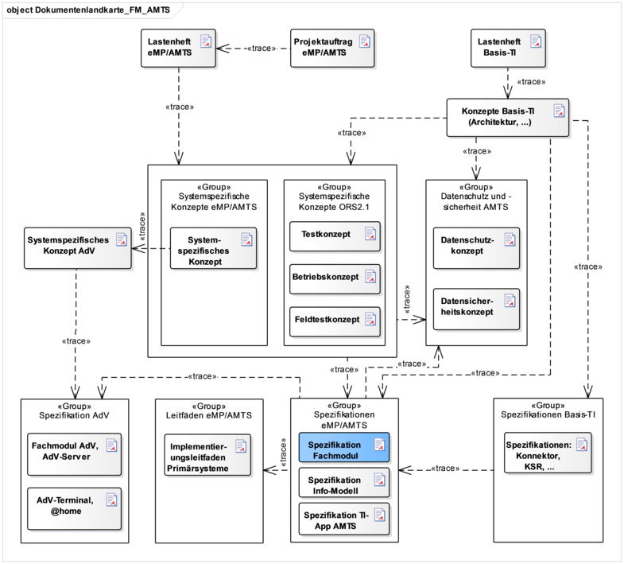
Abbildung 1: Abb_AMTS_FM_001 Dokumentenlandkarte AMTS
Die Abbildung stellt nicht die vollständige Dokumentenhierarchie oder den Trace der An-forderungen dar.
Das Dokument richtet sich an Hersteller des Produkttyps Fachmodul AMTS sowie Hersteller und Anbieter von Produkttypen, die hierzu eine Schnittstelle besitzen.
Wenn im Nachfolgenden Begriffe wie Versicherter, Arzt etc. benutzt werden, sind damit gleichzeitig auch immer die femininen Formen Versicherte, Ärztin, etc. gemeint.
Dieses Dokument enthält normative Festlegungen zur Telematikinfrastruktur des deutschen Gesundheitswesens. Der Gültigkeitszeitraum der vorliegenden Version und deren Anwendung in Zulassungs- oder Abnahmeverfahren wird durch die gematik GmbH in gesonderten Dokumenten (z. B. Dokumentenlandkarte, Produkttypsteckbrief, Leistungsbeschreibung) festgelegt und bekannt gegeben.
Schutzrechts-/Patentrechtshinweis
Die nachfolgende Spezifikation ist von der gematik allein unter technischen Gesichtspunkten erstellt worden. Im Einzelfall kann nicht ausgeschlossen werden, dass die Implementierung der Spezifikation in technische Schutzrechte Dritter eingreift. Es ist allein Sache des Anbieters oder Herstellers, durch geeignete Maßnahmen dafür Sorge zu tragen, dass von ihm aufgrund der Spezifikation angebotene Produkte und/oder Leistungen nicht gegen Schutzrechte Dritter verstoßen und sich ggf. die erforderlichen Erlaubnisse/Lizenzen von den betroffenen Schutzrechtsinhabern einzuholen. Die gematik GmbH übernimmt insofern keinerlei Gewährleistungen.
Spezifiziert werden in dem Dokument die von dem Produkttyp bereitgestellten (angebotenen) Schnittstellen. Benutzte Schnittstellen werden hingegen in der Spezifikation desjenigen Produkttypen beschrieben, der diese Schnittstelle bereitstellt. Auf die entsprechenden Dokumente wird referenziert (siehe auch Anhang A5).
Die vollständige Anforderungslage für den Produkttyp ergibt sich aus weiteren Konzept- und Spezifikationsdokumenten, diese sind in dem Produkttypsteckbrief des Produkttyps Fachmodul AMTS verzeichnet.
Nicht Bestandteil des vorliegenden Dokumentes bzw. der vorliegenden Version sind die Festlegungen zu Folgestufen der Fachanwendung eMP/AMTS.
Anforderungen als Ausdruck normativer Festlegungen werden durch eine eindeutige ID in eckigen Klammern sowie die dem RFC 2119 [RFC2119] entsprechenden, in Großbuchstaben geschriebenen deutschen Schlüsselworte MUSS, DARF NICHT, SOLL, SOLL NICHT, KANN gekennzeichnet.
Da in dem Beispielsatz „Eine leere Liste DARF NICHT ein Element besitzen.“ die Phrase „DARF NICHT“ semantisch irreführend wäre (wenn nicht ein, dann vielleicht zwei?), wird in diesem Dokument stattdessen „Eine leere Liste DARF KEIN Element besitzen.“ verwendet. Die Schlüsselworte werden außerdem um Pronomen in Großbuchstaben ergänzt, wenn dies den Sprachfluss verbessert oder die Semantik verdeutlicht.
Sie werden im Dokument wie folgt dargestellt:
<AFO-ID> - <Titel der Afo>
Text / Beschreibung
[<=]
Dabei umfasst die Anforderung sämtliche zwischen der ID und der Textmarke angeführten Inhalte.
Zugriffe auf die eGK werden mithilfe der im Konnektor vorhandenen Funktionalität durchgeführt. Nach der in [gemSpec_Kon] erläuterten Sprechweise muss sich das Fachmodul AMTS an der Außenschnittstelle so verhalten, als würde es die entsprechenden TUCs zum Zugriff auf den AMTS-Container der eGK verwenden.
Das Kapitel wird in einer späteren Version des Dokumentes ergänzt.
Das Fachmodul AMTS ist eine Softwarekomponente des Konnektors, welche die Anwendungsprozesse der Fachanwendung eMP/AMTS-Datenmanagement umsetzt. Es bietet Clientsystemen in der stationären LE-Umgebung seine Funktionalität an und nutzt dazu die vom Konnektor bereitgestellten Basisdienste der TI-Plattform. Die Systemzerlegung der Fachanwendung eMP/AMTS-Datenmanagement in Komponenten und Produkttypen sowie deren Verteilung auf Produkttypen der Telematikinfrastruktur ist in [gemSysL_AMTS#2] definiert.
Mit dem Fachmodul AMTS interagiert ausschließlich das Clientsystem in der LE-Umgebung.
Das Fachmodul muss sicherstellen, dass nur im jeweiligen Nutzungskontext (Mandant, Arbeitsplatz, Sitzung) berechtigte Clientsysteme zur Ausführung von Operationen autorisiert werden.
Fachliche Akteure (Arzt, Apotheker, usw.) rufen mittels des Clientsystems die Operationen des Fachmoduls AMTS auf, um auf die eGK zuzugreifen. Über ihre Rolle, die technisch durch das Zugriffsprofil ihrer Smartcard repräsentiert wird, erhalten die Akteure die benötigte Berechtigung zum Zugriff.
Das Fachmodul ist integraler Bestandteil des Konnektors. Auf der logischen Ebene sind das Clientsystem und der Anwendungskonnektor als einbettende Komponente Nachbarsysteme.
Eine weitere Untergliederung der Aufbaustruktur des Fachmoduls AMTS ist nicht erforderlich.
Als Schnittstellentechnologie wird SOAP verwendet. Um Interoperabilität zwischen verschiedenen SOAP-Implementierungen [SOAP1.1] zu gewährleisten, erfolgt die technische Umsetzung der Schnittstellen konform zum WS-I Basic Profile in der Version 1.2 [Basic-Profile1.2].
Die Schnittstellen des Fachmoduls AMTS werden in Form von WSDL-Dokumenten [WSDL1.1] und XML-Schemas definiert. Die aus WSDL resultierenden Nachrichten müssen SOAP in der Version 1.1 entsprechen und die Übertragung mittels HTTP in der Version 1.1 erfolgen.
Die WSDL-Dateien und XML-Schemadateien müssen mit dem vorliegenden Dokument zur Verfügung gestellt werden, um eine einfache Implementierung zu gewährleisten und eine maschinelle Prüfung der spezifizierten Elemente zu ermöglichen. Die in den WSDLs verwendete Kodierungsmethode der SOAP-Nachrichten muss „wrapped document/literal“ sein, um Interoperabilität zu gewährleisten.
Das Clientsystem muss alle Requests in UTF-8 kodieren. Diese Festlegungen gelten nur für die eigentliche SOAP-Nachricht. Sind in der SOAP-Nachricht base64-kodierte XML-Elemente vorhanden, so können diese XML-Elemente andere Zeichenkodierungen aufweisen.
Für die Fehlerbehandlung gelten die Festlegungen von [gemSpec_Kon#3.5.2].
Die betriebliche Steuerung erfolgt über den relevanten Konfigurationsparameter des Konnektors (ANCL_TLS_MANDANTORY). Ist dieser gesetzt, so ist für die Kommunikation zwischen Clientsystem und Konnektor (und damit auch dem Fachmodul AMTS) ein TLS-gesicherter Kanal zu verwenden (vgl. [gemSpec_Kon#3.4.1]). Die Kommunikation des Clientsystems mit dem Fachmodul AMTS sollte aus Sicherheitsgründen verschlüsselt erfolgen. Falls diese Kommunikation unverschlüsselt erfolgt, übernimmt der Leistungserbringer die Verantwortung für die Sicherstellung der vertraulichen Übertragung (vgl. auch [gemSpec_Kon#2.7]).
Der Konnektor bietet zudem im Rahmen der Transportsicherung die Möglichkeit, eine Authentifizierung des Clientsystems zu erzwingen. Standardmäßig ist der relevante Konfigurationsparameter des Konnektors (ANCL_CAUT_MANDANTORY) so gesetzt, dass Clientsysteme sich gegenüber dem Konnektor (und damit auch dem Fachmodul AMTS) authentifizieren müssen. Über den Konfigurationsparameter ANCL_CAUT_MODE kann der Authentifizierungsmodus konfiguriert werden (vgl. [gemSpec_Kon#3.4.1]).
Das Fachmodul AMTS ist integraler Bestandteil des Konnektors und Teil von dessen Firmware-Version. Bezüglich der Selbstauskunft gelten die Festlegungen in [gemSpec_Kon#TIP1-A_4812].
Treten bei der Ausführung einer Operation des Fachmoduls Fehler auf, die zum Abbruch der Operation führen, so werden diese an das aufrufende System über eine SOAP-Fault-Nachricht gemeldet. Im Erfolgsfalle oder bei Fehlern, die nicht zum Abbruch der Operation führen, wird ein Status-Element gemäß [gemSpec_Kon#3.5.2] zurückgegeben.
Für das Fehlermanagement gelten neben den hier aufgeführten spezifischen Anforderungen für das Fachmodul AMTS die Anforderungen aus Kapitel 3 der übergreifenden Spezifikation [gemSpec_OM#3].
AMTS-A_2133
Falls nichts durch andere Anforderungen festgelegt wird, MUSS das Fachmodul AMTS einen Operationsaufruf im Fehlerfall mit dem Code 6000 gemäß Tabelle Tab_AMTS_FM_199 abbrechen.
<=AMTS-A_2134
Das Fachmodul AMTS MUSS sicherstellen, dass eine Fehlermeldung immer die vollständige Fehlerkette bis zur Ursache enthält (Fehler-Trace).
<=AMTS-A_2135
Das Fachmodul AMTS DARF in Fehlermeldungen KEINE Informationen über die Implementierung schreiben, z.B. Teile des Programm-Stack-Traces.
<=AMTS-A_2137
Das Fachmodul AMTS DARF in Fehlermeldungen KEINE personenbezogenen und medizinischen Daten verwenden.
<=Das Fachmodul soll Protokolldateien im Konnektor ablegen, die eine Analyse technischer Vorgänge erlauben. Diese Protokolldateien sind dafür vorgesehen, aufgetretene Fehler zu identifizieren, die Performance zu analysieren und interne Abläufe zu beobachten. Dazu stellt der Konnektor den TUC_KON_271 „Schreibe Protokolleintrag“ des Protokollierungsdienstes zur Verfügung (siehe [gemSpec_Kon#4.1.10.4.1]). Um die Anforderungen an den Datenschutz zu gewährleisten, dürfen weder medizinische noch personenbezogene Daten geschrieben werden.
AMTS-A_2139
Das Fachmodul AMTS DARF geheimes Schlüsselmaterial NICHT protokollieren.
<=AMTS-A_2140
Das Fachmodul AMTS DARF medizinische und personenbezogene Daten NICHT protokollieren. Die gesetzlich vorgeschriebene Zugriffsprotokollierung auf der eGK bleibt hiervon unberührt.
<=Die Protokolldateien folgen einem einheitlichen Format, das vom Hersteller festgelegt und dokumentiert wird. Es muss geeignet sein, um automatische Auswertungen mit wenig Aufwand durch Dritte zu ermöglichen. Ein Vorbild ist das Weblog des Apache Webservers. Um mehrere Protokolleinträge zu korrelieren, soll bei Aufruf einer Operation, sprich Aufruf einer Schnittstelle, eine Vorgangsnummer gebildet werden. Diese Vorgangsnummer wird in allen Protokolleinträgen dieses Operationsaufrufs genutzt. Die Vorgangsnummer wird vom Konnektor pseudozufällig gebildet.
AMTS-A_2141
Das Fachmodul AMTS MUSS Protokolleinträge in einem einheitlichen, dokumentierten Format erstellen, um eine automatisierte Auswertung zu ermöglichen.
<=AMTS-A_2236
Das Fachmodul AMTS MUSS sicherstellen, dass sich alle zu einem Operationsaufruf zugehörigen Protokolleinträge über eine Vorgangsnummer korrelieren lassen.
<=Der Zugriff auf Protokolldateien muss auf autorisierte Personen durch angemessene technische oder organisatorische Maßnahmen eingeschränkt werden. Die Zugriffseinschränkungen werden über Mechanismen des Konnektors umgesetzt. Die Logdateien können auf ein separates Speichermedium kopiert werden (siehe [gemSpec_Kon#TIP1-A_4716]).
Der TUC_KON_271 „Schreibe Protokolleintrag“ unterscheidet drei verschiedene Logging-Protokolle:
Abhängig von der Schwere (Severity), werden die Einträge der drei Protokolle in folgende Klassen eingeteilt:
Tabelle 1: Tab_AMTS_FM_019 Einteilung der Protokolleinträge in Abhängigkeit der Schwere
| Schwere (Severity) |
Klasse (entspricht …) |
|---|---|
| Debug |
Debug (~ Debug-Protokoll) |
| Info |
Ablauf / Ereignis (~ Ablaufprotokoll) |
| Warning, Error, Fatal |
Fehler (~ Fehlerprotokoll) |
AMTS-A_2144
Das Fachmodul AMTS MUSS die internen Ausführungsschritte der Operationsaufrufe im Fachmodulprotokoll mit mindestens den folgenden Parametern erfassen:
Tabelle 2: Tab_AMTS_FM_016 Parameter des Ablaufprotokolls
| Feld |
Beschreibung |
|---|---|
| eventType |
„Op“ |
| Schwere |
„Info“ |
| Vorgangsnummer |
Zeichenkette zur Korrelation der zugehörigen Protokolleinträge |
| Zeitpunkt |
Zeitpunkt der Erstellung des Protokolleintrags |
| Bezeichnung |
vollständiger Name des Ausführungsschrittes |
| Beschreibung |
Details zum Ausführungsschritt inklusive Ergebnis |
| Pin-Eingabe |
Beschreibung bei erfolgter PIN-Eingabe inklusive Ergebnis |
| Eingangsparameter |
Werte der Eingangsparameter, falls vorhanden |
AMTS-A_2689
Das Fachmodul AMTS MUSS Protokolleinträge mittels TUC_KON_271 „Schreibe Protokolleintrag“ in die Protokolldateien persistieren.
<=AMTS-A_2142
Das Fachmodul AMTS MUSS unabhängig vom ErrorType alle lokal erkannten und Remote-Fehler der Severity „Warning“, „Error“ oder „Fatal“ im Fachmodulprotokoll mit mindestens den folgenden Parametern erfassen:
Tabelle 3: Tab_AMTS_FM_017 Parameter des Fehlerprotokolls
| Feld |
Beschreibung |
|---|---|
| eventType |
„Op“ |
| Schwere |
„Warning“, „Error“, „Fatal“ |
| Vorgangsnummer |
Zeichenkette zur Korrelation der zugehörigen Protokolleinträge |
| Zeitpunkt |
Zeitpunkt der Erstellung des Protokolleintrags |
| Fehlercode |
Fehlercode des aufgetretenen Fehlers |
| CardHandle |
CardHandle der betroffenen eGK |
| Fehlerdetails |
Weiterführende Details zum Fehler |
AMTS-A_2146
Falls nicht im Produktivbetrieb laufend, KANN das Fachmodul AMTS für Testzwecke im Fachmodulprotokoll Debug-Einträge mit mindestens den folgenden Parametern erfassen:
Tabelle 4: Tab_AMTS_FM_018 Parameter des Debug-Protokolls
| Feld |
Beschreibung |
|---|---|
| eventType |
„Op“ |
| Schwere |
„Debug“ |
AMTS-A_2143
Das Fachmodul AMTS MUSS sicherheitsrelevante Fehler und Ereignisse über den Protokollierungsdienst des Konnektors im Sicherheitsprotokoll des Konnektors mindestens mit den folgenden Parametern erfassen:
Tabelle 5: Tab_AMTS_FM_021 Parameter des Sicherheitsprotokolls
| Feld |
Beschreibung |
|---|---|
| eventType |
„Sec“ |
| Schwere |
„Info“, „Warning“, „Error“, „Fatal“ |
| Vorgangsnummer |
Zeichenkette zur Korrelation der zugehörigen Protokolleinträge |
| Name der Operation |
Name der untersuchten Operation |
| Bezeichnung |
Bezeichnung des sicherheitsrelevanten Fehlers oder Ereignisses |
| Beschreibung |
Details des sicherheitsrelevanten Fehlers oder Ereignisses |
AMTS-A_2688
Das Fachmodul AMTS MUSS alle zur Kontrolle der Performancevorgaben benötigten, mindestens aber die nachfolgenden, Parameter der Operationsaufrufe im Performanceprotokoll erfassen:
Tabelle 6: Tab_AMTS_FM_022 Parameter des Performanceprotokolls
| Feld |
Beschreibung |
|---|---|
| eventType |
„Perf“ |
| Vorgangsnummer |
Zeichenkette zur Korrelation der zugehörigen Protokolleinträge |
| Name der Operation |
Name der untersuchten Operation |
| Startzeitpunkt |
Startzeitpunkt der Operation |
| Dauer |
Dauer der Operation in ms |
| Beschreibung |
Ergänzende Informationen zur gemessenen Aktion |
Hinweis: Der Parameter „Schwere“ wird für einen Eintrag im Performanceprotokoll nicht verwendet.
Die Zugriffsprotokolleinträge werden mittels TUC_KON_006 „Datenzugriffsaudit eGK schreiben“ des Kartendienstes erstellt (siehe [gemSpec_Kon#4.1.5]).
AMTS-A_2151
Das Fachmodul AMTS MUSS die in der Tabelle Tab_AMTS_FM_001 definierten Werte für die Informationselemente des Zugriffsprotokolleintrags auf der eGK G2.0 verwenden.
<=Tabelle 7: Tab_AMTS_FM_001 Werte der Zugriffsprotokolleinträge auf der eGK G2.0
| Operation |
Data Type |
Type of Access |
Beschreibung |
Timestamp, Actor-ID, Actor-Name |
|
|---|---|---|---|---|---|
| ReadMP |
5 (siehe [gemSpec_Karten_Fach_TIP#Card-G2-A_3506]) |
Z |
F |
|
gemäß [gemSpec_Karten_Fach_TIP# Card-G2-A_3506] |
| WriteMP |
Z |
F |
|||
| DeleteConsent |
Z |
||||
| ReadConsent |
Z |
||||
| WriteConsent |
Z |
||||
Um in einem normalen Behandlungsverlauf (1. von eGK Lesen 2. Behandlung oder Medikament ausgeben 3. auf eGK schreiben) eine Mehrfach-PIN-Eingabe zu vermeiden, ist es für eGK G2.0 notwendig, ausschließlich bei der ersten Freischaltung der eGK einen Log-Eintrag für den gesamten Behandlungsverlauf, der mit dieser Freischaltung abläuft, zu schreiben. Die Anpassungen der eGK G2.1 beheben diese Einschränkung.
AMTS-A_2643
Das Fachmodul AMTS DARF pro Kartensitzung mit einer eGK G2.0 NICHT mehr als einen Zugriffsprotokolleintrag schreiben.
<=AMTS-A_2149
Beim Aufruf einer in Tabelle Tab_AMTS_FM_001 gelisteten Operation MUSS das Fachmodul AMTS einen Zugriffsprotokolleintrag auf der eGK G2.0 vor der PIN-Freischaltung erzeugen.
<=AMTS-A_2150
Beim Aufruf einer in Tabelle Tab_AMTS_FM_020 gelisteten Operation MUSS das Fachmodul AMTS einen Zugriffsprotokolleintrag auf der eGK G2.1 vor dem Kartenzugriff erzeugen.
<=Tabelle 8: Tab_AMTS_FM_020 Werte der Zugriffsprotokolleinträge auf der eGK G2.1
| Operation |
Data Type |
Type of Access |
Beschreibung |
Timestamp, Actor-ID, Actor-Name |
|---|---|---|---|---|
| ReadMP |
5 |
R |
Zugriff durch Versicherten |
gemäß [gemSpec_Karten_Fach_TIP# Card-G2-A_3506] |
| r |
Fremdzugriff durch Vertreter |
|||
| WriteMP |
5 |
W |
Zugriff durch Versicherter |
|
| w |
Fremdzugriff durch Vertreter |
|||
| DeleteConsent |
5 |
D |
Zugriff durch Versicherten |
|
| ReadConsent |
5 |
E |
Zugriff durch Versicherten |
|
| WriteConsent |
5 |
F |
Zugriff durch Versicherten |
AMTS-A_2152
Das Fachmodul AMTS MUSS die in Tabelle Tab_AMTS_FM_002 genannten Parameter dem Administrator über die Managementschnittstelle des Konnektors zur Konfiguration anbieten.
<=Tabelle 9: Tab_AMTS_FM_002 Konfigurationsparameter des Fachmodules AMTS
| ReferenzID |
Belegung |
Bedeutung |
|---|---|---|
| FM_AMTS_LOG_LEVEL |
Debug, Info, Warning, Error, Fatal |
Kleinster Level der zu schreibenden Einträge im Protokoll (d.h. kleinere Level werden nicht geschrieben) Default-Wert: Warning |
| FM_AMTS_LOG_DAYS |
X Tage |
Anzahl an Tagen, wie lange Protokolleinträge gespeichert werden müssen; Protokolleinträge dürfen nicht länger gespeichert werden Dabei darf der eingestellte Wert nicht unter der Mindestgröße von 10 Tagen oder über der Maximalgröße von einem Jahr (365 Tage) liegen. Default-Wert: 180 |
| FM_AMTS_LOG_PERF |
Boolean |
Gibt an, ob das Performance-Protokoll für das Fachmodul AMTS geführt werden soll. Default-Wert: false |
Die Einsicht von Protokolldateien und Administration der Konfigurationsparameter erfolgen über die Managementschnittstelle des Konnektors (vgl. [gemSpec_Kon#4.3.4]).
Das Fachmodul AMTS muss sicherstellen, dass nur im jeweiligen Nutzungskontext (Mandant, Arbeitsplatz, Sitzung) berechtigte Clientsysteme zur Ausführung der Operationen des Fachmoduls autorisiert werden.
Zu diesem Zweck bietet der Konnektor den Fachmodulen den internen TUC_KON_000 „Prüfe Zugriffsberechtigung“ (vgl. [gemSpec_Kon#4.1.1.4.1]).
Die Akteure, die in der LE-Umgebung über das Clientsystem die Operationen des Fachmoduls AMTS aufrufen, erhalten mittels ihrer fachlichen Rolle, die technisch durch das Zugriffsprofil ihrer Smartcard repräsentiert wird, die Autorisierung zum Zugriff auf die eGK. Tabelle [gemSpec_PKI#Tab_PKI_254] beschreibt die fachlichen Rollen und die zugehörige Flaglist.
Das Objektsystem der eGK, im Speziellen die Zugriffsbedingungen in Form von benötigten CV-Flags (C2C) und PIN-Eingaben, setzt den größten Teil der Zugriffsberechtigungen um (vgl. [gemSpec_eGK_ObjSys#5.4.15]). Alle ergänzenden Anforderungen werden in diesem Dokument getroffen.
Anforderungen zur Skalierbarkeit und Performance für die Fachanwendung eMP/AMTS-Datenmanagement sind im Dokument [gemSpec_Perf] enthalten.
Das Fachmodul AMTS muss seine für die Clientsysteme vorgesehen Services mittels des Dienstverzeichnisdienstes des Konnektors verfügbar machen. Zur Registrierung kann der interne TUC_KON_041 „Einbringen der Endpunktinformationen während der Bootup-Phase“ verwendet werden.
AMTS-A_2153
Während der Boot-Phase des Konnektors MUSS das Fachmodul AMTS den AMTS_Service gemäß Tab_AMTS_FM_005 mit den Parametern der Tabelle Tab_AMTS_FM_004 nach [ServiceInformation.xsd] im Dienstverzeichnis registrieren.
<=Tabelle 10: Tab_AMTS_FM_004 Service-Information für AMTSService (Umsetzung der Schnittstelle I_AMTS_Management)
| Element (XPath) |
Inhalt/Beschreibung |
|---|---|
| CONN:ServiceInformation/CONN:Service /@Name |
AMTSService |
| CONN:ServiceInformation/CONN:Service /CONN:Abstract |
Fachanwendung eMP/AMTS-Datenmanagement verwenden |
| CONN:ServiceInformation/CONN:Service /CONN:Versions/CONN:Version /@TargetNamespace |
Aktueller Namensraum aus Tabelle „Tab_AMTS_FM_005 Beschreibung des Web Services AMTS_Service“ |
| CONN:ServiceInformation/CONN:Service /CONN:Versions/CONN:Version/@Version |
Aktuelle Versionsnummer aus Tabelle „Tab_AMTS_FM_005 Beschreibung des Web Services AMTS_Service“ |
| CONN:ServiceInformation/CONN:Service /CONN:Versions/CONN:Version /CONN:Abstract |
Initiale Version (der Stufe A) der Fachanwendung eMP/AMTS-Datenmanagement |
| CONN:ServiceInformation/CONN:Service /CONN:Versions/CONN:Version /CONN:Endpoint/@Location |
Absoluter URL des über Hypertext Transfer Protocol (HTTP) erreichbaren Dienstes |
| CONN:ServiceInformation/CONN:Service /CONN:Versions/CONN:Version /CONN:EndpointTLS/@Location |
Absoluter URL des HTTPS erreichbaren Dienstes |
| CONN:ServiceInformation/CONN:Service /CONN:Versions/CONN:Version/CONN:WSDL /@Location |
Absoluter URL der WSDL-Beschreibung |
Die persönlichen Versichertenstammdaten der Fachanwendung VSDM werden durch die Fachanwendung eMP/AMTS-Datenmanagement in der Stufe A nicht nachgenutzt, sondern redundant in der Datei EF.AMTS gespeichert.
Das Kapitel enthält die vollständige Beschreibung der Funktionsmerkmale, welche das Fachmodul AMTS den Clientsystemen und anderen Fachmodulen anbietet. Das methodische Vorgehen der Spezifikation gliedert sich in drei Schritte, die sich in der Kapitelstruktur widerspiegeln:
Entwickler von Clientsystemen und Spezifikationsautoren anderer Fachmodule finden hier alle für sie relevanten Festlegungen.
Der Teil des Kapitels richtet sich in erster Linie an die Auftragnehmer zur Implementierung des Fachmoduls im Konnektor.
Eindeutig spezifizierte Schnittstellen an den Außengrenzen der Telematikinfrastruktur sind Grundlage für die Interoperabilität zwischen der TI und den angeschlossenen Systemen. Produkte verschiedener Hersteller und Anbieter müssen die spezifizierten Schnittstellen nutzen, um die geforderte Funktionalität und Interoperabilität zu gewährleisten. Dieses Unterkapitel spezifiziert die Schnittstellen des Fachmodules AMTS, die von den Clientsystemen zum Lesen und Schreiben des eMP/AMTS-Datensatzes genutzt werden.
Das Systemspezifische Konzept eMP/AMTS [gemSysL_AMTS_A] gibt für das Fachmodul AMTS folgende Schnittstelle vor:
Der Web Service AMTS_Service implementiert die in der Systemlösung AMTS aufgezeigte Schnittstelle I_AMTS_Management. Der Service darf ausschließlich von den Clientsystemen in der LE-Umgebung genutzt werden.
AMTS-A_2154
Das Fachmodul AMTS MUSS für Clientsysteme den Web Service „AMTS_Service“ gemäß Tabelle Tab_AMTS_FM_005 anbieten.
<=Tabelle #: Tab_AMTS_FM_005 Beschreibung des Web Services AMTS_Service
| Name |
AMTS_Service |
|
|---|---|---|
| Version |
1.0.0 |
|
| Namensraum |
http://ws.gematik.de/conn/amts/AMTSService/v1.0 |
|
| Abkürzung Namensraum |
AMTS |
|
| Operationen |
Name |
Umsetzung des Anwendungsfalls |
| ReadMP |
eMP/AMTS-Daten von eGK lesen |
|
| WriteMP |
eMP/AMTS-Daten auf eGK schreiben |
|
| ReadConsent |
Einwilligung anzeigen |
|
| WriteConsent |
Einwilligung erteilen |
|
| DeleteConsent |
Einwilligung widerrufen |
|
| WSDL |
[AMTSService.wsdl] |
|
| XML-Schema |
[AMTSService.xsd] |
|
Tabelle 11: Tab_AMTS_FM_007 Schnittstellenbeschreibung der Operation ReadMP
| Name |
ReadMP |
|
|---|---|---|
| Beschreibung |
Die Daten werden entpackt und an das aufrufende System übergeben. |
|
| Aufrufparameter |
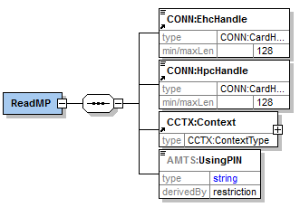 |
|
| Name |
Beschreibung |
|
| EhcHandle |
Verweis auf die eGK gemäß [gemSpec_Kon#4.1.1.1] bzw. [ConnectorCommon.xsd], von der die eMP/AMTS-Daten gelesen werden sollen |
|
| HpcHandle |
Verweis auf LE-Karte (HBA/SMC-B) gemäß [gemSpec_Kon#4.1.1.1] bzw. [ConnectorCommon.xsd], die zum Zugriff auf die eGK verwendet werden soll |
|
| Context |
Angaben zum Aufrufkontext gemäß [gemSpec_Kon#4.1.1.4.1] bzw. [ConnectorContext.xsd]
|
|
| UsingPIN |
PIN-Objekt, das zur Freischaltung der eGK genutzt werden soll (AMTS-PIN oder Vertreter-PIN) |
|
| Rückgabeparameter |
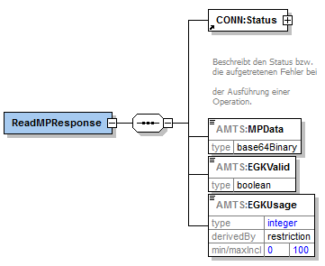 |
|
| Name |
Beschreibung |
|
| Status |
Status nach [gemSpec_Kon#3.5.2] |
|
| MPData |
Von der eGK gelesene und bearbeitete eMP/AMTS-Daten nach dem Informationsmodell AMTS |
|
| EGKValid |
Kennzeichen, ob die eGK gültig ist
|
|
| EGKUsage |
Nutzungsgrad des Speicherplatzes von EF.AMTS in Prozent |
|
Tabelle 12: Tab_AMTS_FM_008 Schnittstellenbeschreibung der Operation WriteMP
| Name |
WriteMP |
|
|---|---|---|
| Beschreibung |
Die Operation WriteMP schreibt die vom aufrufenden System übergebenen eMP/AMTS-Daten in die Datei EF.AMTS auf der eGK. Die Daten werden zuvor validiert, in das Speicherformat transformiert und komprimiert. |
|
| Aufrufparameter |
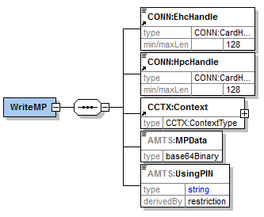 |
|
| Name |
Beschreibung |
|
| EhcHandle |
Verweis auf die eGK gemäß [gemSpec_Kon#4.1.1.1] bzw. [ConnectorCommon.xsd], auf die eMP/AMTS-Daten geschrieben werden sollen |
|
| HpcHandle |
Verweis auf LE-Karte (HBA/SMC-B) gemäß [gemSpec_Kon#4.1.1.1] bzw. [ConnectorCommon.xsd], die zum Zugriff auf die eGK verwendet werden soll |
|
| Context |
Angaben zum Aufrufkontext gemäß [gemSpec_Kon#4.1.1.4.1] bzw. [ConnectorContext.xsd]
|
|
| MPData |
Die auf der eGK zu speichernden eMP/AMTS-Daten nach dem Informationsmodell AMTS |
|
| UsingPIN |
PIN-Objekt, das zur Freischaltung der eGK genutzt werden soll (AMTS-PIN oder Vertreter-PIN) |
|
| Rückgabeparameter |
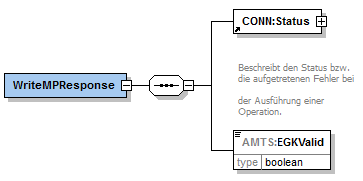 |
|
| Name |
Beschreibung |
|
| Status |
Status nach [gemSpec_Kon#3.5.2] |
|
| EGKValid |
Kennzeichen, ob die eGK gültig ist
|
|
Tabelle 13: Tab_AMTS_FM_009 Schnittstellenbeschreibung der Operation ReadConsent
| Name |
ReadConsent |
|
|---|---|---|
| Beschreibung |
Die Operation ReadConsent liest die Einwilligungsdaten aus der Datei EF.AMTS von der eGK und gibt sie an das aufrufende System zurück. |
|
| Aufrufparameter |
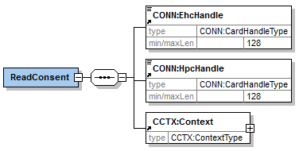 |
|
| Name |
Beschreibung |
|
| EhcHandle |
Verweis auf die eGK gemäß [gemSpec_Kon#4.1.1.1] bzw. [ConnectorCommon.xsd], von der die Einwilligungsdaten gelesen werden sollen |
|
| HpcHandle |
Verweis auf LE-Karte (HBA/SMC-B) gemäß [gemSpec_Kon#4.1.1.1] bzw. [ConnectorCommon.xsd], die zum Zugriff auf die eGK verwendet werden soll |
|
| Context |
Angaben zum Aufrufkontext gemäß [gemSpec_Kon#4.1.1.4.1] bzw. [ConnectorContext.xsd]
|
|
| Rückgabeparameter |
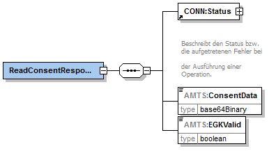 |
|
| Name |
Beschreibung |
|
| Status |
Status nach [gemSpec_Kon#3.5.2] |
|
| ConsentData |
Auf der eGK gespeicherte Einwilligungsdaten der Fachanwendung eMP/AMTS-Datenmanagement |
|
| EGKValid |
Kennzeichen, ob die eGK gültig ist
|
|
Tabelle 14: Tab_AMTS_FM_010 Schnittstellenbeschreibung der Operation WriteConsent
| Name |
WriteConsent |
|
|---|---|---|
| Beschreibung |
Die Operation WriteConsent schreibt die vom aufrufenden System übergebenen Einwilligungsdaten in die Datei EF.AMTS auf die eGK. |
|
| Aufrufparameter |
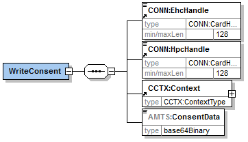 |
|
| Name |
Beschreibung |
|
| EhcHandle |
Verweis auf die eGK gemäß [gemSpec_Kon#4.1.1.1] bzw. [ConnectorCommon.xsd], auf die die Einwilligungsdaten geschrieben werden sollen |
|
| HpcHandle |
Verweis auf LE-Karte (HBA/SMC-B) gemäß [gemSpec_Kon#4.1.1.1] bzw. [ConnectorCommon.xsd], die zum Zugriff auf die eGK verwendet werden soll |
|
| Context |
Angaben zum Aufrufkontext gemäß [gemSpec_Kon#4.1.1.4.1] bzw. [ConnectorContext.xsd]
|
|
| ConsentData |
Vom aufrufenden System übergebenen Einwilligungsdaten, die auf die eGK geschrieben werden soll |
|
| Rückgabeparameter |
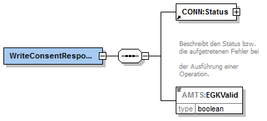 |
|
| Name |
Beschreibung |
|
| Status |
Status nach [gemSpec_Kon#3.5.2] |
|
| EGKValid |
Kennzeichen, ob die eGK gültig ist
|
|
Tabelle 15: Tab_AMTS_FM_011 Schnittstellenbeschreibung der Operation DeleteConsent
| Name |
DeleteConsent |
|
|---|---|---|
| Beschreibung |
Die Operation DeleteConsent löscht die Einwilligungsdaten und die eMP/AMTS-Daten (eMP/AMTS-Datensatz) von der eGK. |
|
| Aufrufparameter |
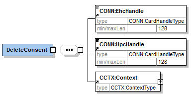 |
|
| Name |
Beschreibung |
|
| EhcHandle |
Verweis auf die eGK gemäß [gemSpec_Kon#4.1.1.1] bzw. [ConnectorCommon.xsd], von der der eMP/AMTS-Datensatz gelöscht werden soll |
|
| HpcHandle |
Verweis auf LE-Karte (HBA/SMC-B) gemäß [gemSpec_Kon#4.1.1.1] bzw. [ConnectorCommon.xsd], die zum Zugriff auf die eGK verwendet werden soll |
|
| Context |
Angaben zum Aufrufkontext gemäß [gemSpec_Kon#4.1.1.4.1] bzw. [ConnectorContext.xsd]
|
|
| Rückgabeparameter |
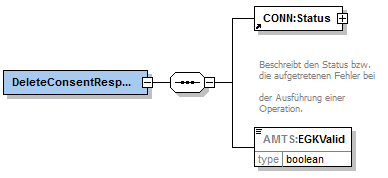 |
|
| Name |
Beschreibung |
|
| Status |
Status nach [gemSpec_Kon#3.5.2] |
|
| EGKValid |
Kennzeichen, ob die eGK gültig ist
|
|
Die im Systemspezifischen Konzept [gemSysL_AMTS_A] aufgezeigte Operation GrantApproval wird auf Spezifikationsebene nicht separat umgesetzt, sondern ist Bestandteil der übergreifenden Anforderungen. Der entsprechende Anwendungsfall „Einverständnis erteilen“ kann nur im Kontext anderer Anwendungsfälle existieren. Daher gibt es für diese Operation auch keine Außenschnittstelle am Fachmodul.
Die meisten Operationen erfordern zur Durchführung sowohl eine eGK, als auch einen HBA bzw. eine SMC-B. Sollte eine benötigte Karte nicht gesteckt sein (oder z.B. ein als Parameter übergebenes Karten-Handle ungültig), bricht das Fachmodul AMTS die aufgerufene Operation ab.
AMTS-A_2157
Falls eine zur Durchführung einer Operation benötigte Smartcard nicht gesteckt oder ein übergebenes Karten-Handle ungültig ist, MUSS das Fachmodul AMTS die Operation mit dem Code 4008 gemäß [gemSpec_Kon] abbrechen.
<=
AMTS-A_2158
Falls eine im Ablauf einer Operation benötigte Freischaltung einer beteiligten Smartcard nicht durchgeführt werden kann (z.B. weil die PIN gesperrt ist), MUSS das Fachmodul AMTS die Operation mit dem Code 6049 gemäß Tabelle Tab_AMTS_FM_199 abbrechen.
<=Alle Operationen werden bei Aufruf auf Vollständigkeit hinsichtlich ihrer Parameter überprüft.
AMTS-A_2159
Falls die von einem aufrufenden System übergebenen Parameter für eine Operation nicht vollständig oder nicht gültig sind, MUSS das Fachmodul AMTS die Operation mit dem Code 4000 gemäß [gemSpec_KON] abbrechen.
<=
Die Prüfung der Zugriffsberechtigung auf vom Konnektor verwaltete externe Ressourcen (z.B. Kartenterminal mit Slots) erfolgt anhand der vom Clientsystem übergebenen Parameter. Sie werden mit der durch den Administrator im Zugriffsberechtigungsdienst abgelegten Konfiguration der Umgebung abgeglichen. Die Abläufe werden durch TUC_KON_000 “Prüfe Zugriffsberechtigung” in [gemSpec_Kon] beschrieben.
AMTS-A_2160
Falls die Operationen ReadMP, WriteMP, ReadConsent, WriteConsent und DeleteConsent Zugriff auf externe Ressourcen wie z.B. Kartenterminals benötigen, MUSS das Fachmodul AMTS vorher mithilfe des Zugriffsberechtigungsdienstes des Konnektors die Berechtigung prüfen.
<=AMTS-A_2161
Falls die von einer Operation übergebenen Parameter nicht zum Zugriff auf benötigte Ressourcen berechtigen, MUSS das FM AMTS die Operation abbrechen und den Fehlercode des Zugriffsberechtigungsdienstes zurückliefern.
<=AMTS-A_2162
Falls der Ordner DF.HCA einer beteiligten eGK nicht aktiv ist, MUSS das Fachmodul AMTS die aufgerufene Operation mit dem Code 114 gemäß [gemSpec_OM] abbrechen.
<=AMTS-A_2163
Falls das Fachmodul AMTS zum Zugriff auf einen Bereich der eGK nach [gemSpec_eGK_ObjSys] ein C2C gegen eine SMC-B bzw. einen HBA benötigt, so MUSS es das per gegenseitigem C2C durchführen.
<=AMTS-A_2164
Falls eine C2C-Prüfung fehlschlägt, MUSS das Fachmodul AMTS die Operation mit dem Code 6052 gemäß Tabelle Tab_AMTS_FM_199 abbrechen.
<=Die Fachanwendung eMP/AMTS benötigt eine eGK der 2. Generation oder höher. [gemSpec_Kon#4.1.5] beschreibt den Kartendienst des Konnektors und enthält alle TUCs für Lese- und Schreibzugriffe auf die eGK. Werte für die benötigten Parameter des TUCs finden sich in den Dokumenten [gemSpec_eGK_ObjSys#5.4.15] und [gemSpec_eGK_Fach_AMTS].
AMTS-A_2165
Falls die beteiligte eGK nicht mindestens der 2. Generation entspricht, MUSS das Fachmodul AMTS die aufgerufene Operation mit dem Code 6051 gemäß Tabelle Tab_AMTS_FM_199 abbrechen.
<=Um bei fehlerbedingten Abbrüchen (z. B. vorzeitiges Entfernen der eGK) das korrekte Funktionieren der Anwendung zu ermöglichen, wird der jeweilige Transaktionsstatus auf der eGK gespeichert. Die dafür verwendete Speicherstruktur ist in [gemSpec_eGK_Fach_AMTS] dokumentiert.
AMTS-A_2238
Die Operationen WriteMP, WriteConsent und DeleteConsent MÜSSEN Schreibzugriffe auf die eGK im Feld Status der Datei EF.StatusAMTS mit „1“ als Transaktion kennzeichnen.
<=AMTS-A_2239
Die Operationen WriteMP, WriteConsent und DeleteConsent MÜSSEN im Ablauf gestartete Transaktionen im Feld Status der Datei EF.StatusAMTS, sowohl bei erfolgreichem Schreibzugriff als auch im Fehlerfall, wieder beenden und den Status auf „0“ setzen.
<=
AMTS-A_2166
Falls das Informationselement „Status“ der Datei EF.StatusAMTS eine offene Transaktion mittels „1“ anzeigt, MUSS das Fachmodul AMTS die Operationen ReadMP und ReadConsent mit dem Code 6054 gemäß Tabelle Tab_AMTS_FM_199 abbrechen.
<=AMTS-A_2646
Das FM AMTS MUSS gleichzeitige Zugriffe durch mehrere Operationen auf eine eGK unterbinden.
<=Die Notwendigkeit für eine PIN-Abfrage über ein Kartenterminal ergibt sich aus Objektsystemspezifikation der eGK. Diese kennt zwei PIN-Objekte zur Freischaltung des Containers EF.AMTS. Das Fachmodul muss vor dem Zugriff wissen, welches der beiden PIN-Objekte benutzt werden soll. Diese Information wird den Operationen ReadMP und WriteMP als Parameter von dem aufrufenden System übergeben (vgl. Kapitel 6.3.4 und 6.3.5). Die MRPIN.HOME darf nicht verwendet werden.
AMTS-A_2167
Das Fachmodul AMTS DARF das PIN-Objekt MRPIN.home NICHT benutzen.
<=Zur Sicherstellung, dass nur Daten des Karteninhabers auf die eGK gespeichert werden, wird bei einem Schreibzugriff die Versicherten-ID der übergebenen Daten mit der Versicherten-ID auf der eGK verglichen. Da bei einem Verzeichniswechsel auf der eGK G2.0 die erreichten Sicherheitszustände von PIN-Objekten zurückgesetzt werden, ist es für die Vermeidung unnötiger PIN-Eingaben zweckmäßig, die Versicherten-ID zu Beginn einer Operation auszulesen und zwischenzuspeichern. Die Anpassungen der eGK G2.1 beheben diese Einschränkung.
AMTS-A_2168
Das Fachmodul AMTS MUSS für eGK G2.0, zu Beginn jeder Operation die Versicherten-ID der eGK lesen, mit dem Primärsystem vergleichen (sofern die Versicherten-ID dort gespeichert ist) und zur weiteren Verwendung, auch in anderen Operation, zwischenspeichern.
<=
AMTS-A_2647
Falls sich die Versicherten-ID bereits im Zwischenspeicher befindet, DARF das Fachmodul AMTS die Versicherten-ID während der bestehenden Kartensitzung NICHT erneut von der eGK G2.0 lesen.
<=AMTS-A_2169
Das Fachmodul AMTS MUSS zwischengespeicherte Versicherten-ID für alle Operationen beim Beenden der Kartensitzung löschen.
<=AMTS-A_2170
Falls die Fachanwendung eMP/AMTS auf der eGK deaktiviert ist, MUSS das Fachmodul AMTS jede Operation mit dem Code 6064 gemäß Tabelle Tab_AMTS_FM_199 abbrechen.
<=
Bei deaktivierter Anwendung liefert TUC_KON_202 „LeseDatei“ den Fehlercode 4086 „Verzeichnis deaktiviert“ zurück.
Bei einem aktiven Ordner DF.HCA und im OCSP-Responder gesperrtem C.CH.AUT-Zertifikat liest die Fachanwendung zwar noch Daten von der eGK, verhindert aber das Schreiben. Wird z. B. bei einem Krankenkassenwechsel des Versicherten die alte eGK gesperrt, soll es dennoch möglich sein, die Daten zu Lesen und bei einem LE auf eine neue eGK zu übertragen. Außerdem ist das Löschen von Daten auf einer gesperrten Karte möglich.
AMTS-A_2172
Falls das C.CH.AUT-Zertifikat der eGK gesperrt ist, MUSS das Fachmodul AMTS die Operationen WriteMP und WriteConsent mit dem Code 6063 gemäß Tabelle Tab_AMTS_FM_199 abbrechen.
<=AMTS-A_2173
Falls das C.CH.AUT-Zertifikat der eGK gesperrt ist, MUSS das Fachmodul AMTS die Operationen ReadMP, ReadConsent und DeleteConsent dennoch durchführen.
<=Der Parameter EGKValid wird bei jeder Operation, die auf die eGK zugreift, zurückgegeben, d.h. es findet mindestens einmal pro Kartensitzung eine vollständige Prüfung der Gültigkeit, wie in TUC_KON_018 beschrieben, statt.
AMTS-A_2174
Das Fachmodul AMTS MUSS bei jeder Operation den Parameter „EGKValid“ wie folgt befüllen (boolescher Ausdruck):
DF.HCA gesperrt == „false“
und
Offline-Prüfung des C.CH.AUT-Zertifikats == „gültig“
und
Sperrstatus des C.CH.AUT-Zertifikats == („gut“ oder „nicht ermittelbar“).
<=AMTS-A_2175
Das Fachmodul AMTS MUSS bei jeder erfolgreich durchlaufenden Operation den Parameter Status im Element Status/Result mit „OK“ befüllen (vgl. [ConnectorCommon.xsd]).
<=Die Operation des Fachmoduls AMTS können auf zwei verschiedene Arten vorzeitig beendet werden. Das Ziehen der eGK kann im Gegensatz zum kontrollierten Abbruch über das Terminal zu einem Datenverlust führen.
AMTS-A_2178
Das Fachmodul AMTS MUSS die Möglichkeit bieten, die momentan ausgeführte Operation über das Kartenterminal, in dem die beteiligte eGK steckt, vorzeitig zu beenden.
<=AMTS-A_2179
Falls die eGK vor dem Ende der Ausführung einer Operation gezogen wird MUSS das Fachmodul AMTS diese Operation mit dem Code 6072 gemäß Tabelle Tab_AMTS_FM_199 abbrechen.
<=AMTS-A_2189
Das Fachmodul AMTS DARF die Daten des eMP/AMTS-Datensatzes NICHT länger speichern als zur Durchführung einer Operation unbedingt notwendig ist.
<=
AMTS-A_2648
Beim Entfernen der eGK MUSS das Fachmodul AMTS alle temporären Daten löschen.
<=AMTS-A_2204
Die Operationen ReadConsent, WriteConsent und DeleteConsent MÜSSEN bei der Prüfung der Berechtigung zum Zugriff auf die Einwilligungsdaten die MRPIN.AMTS benutzen.
<=Der Vertreter darf nicht auf die Einwilligung des Versicherten zugreifen und daher die Operation ReadConsent nicht ausführen. Allerdings muss er grundsätzlich die Berechtigung zum Lesen der Einwilligung im Objektsystem haben, damit das Fachmodul vor dem Lesen oder Schreiben der eMP/AMTS-Daten die Einwilligung auf Vorhandensein kontrollieren kann. Die Anforderung erscheint etwas widersprüchlich, lässt sich aber durch das Fachmodul AMTS umsetzen, da die Einwilligung beim Lesen der eMP/AMTS-Daten nicht an das Clientsystem zurückgegeben wird.
AMTS-A_2180
Alle Operationen des Fachmoduls AMTS MÜSSEN mindestens
AMTS-A_2181
Das Fachmodul AMTS MUSS für notwendige PIN-Eingaben am Kartenterminal die in Tabelle Tab_AMTS_FM_013 Terminalanzeigen für PIN-Eingabe definierten Terminalanzeigen verwenden.
<=Tabelle 16: Tab_AMTS_FM_013 Terminalanzeigen für PIN-Eingaben
| PIN-Objekt zur Freischaltung (PIN-referenz) |
Parameter für Terminalanzeigen nach [gemSpec_Kon# TAB_KON_090] |
|---|---|
| MRPIN.AMTS |
|
| PIN.AMTS_REP |
Abbildung Abb_AMTS_FM_002 stellt informativ den Ablauf der Operation GrantApproval dar.
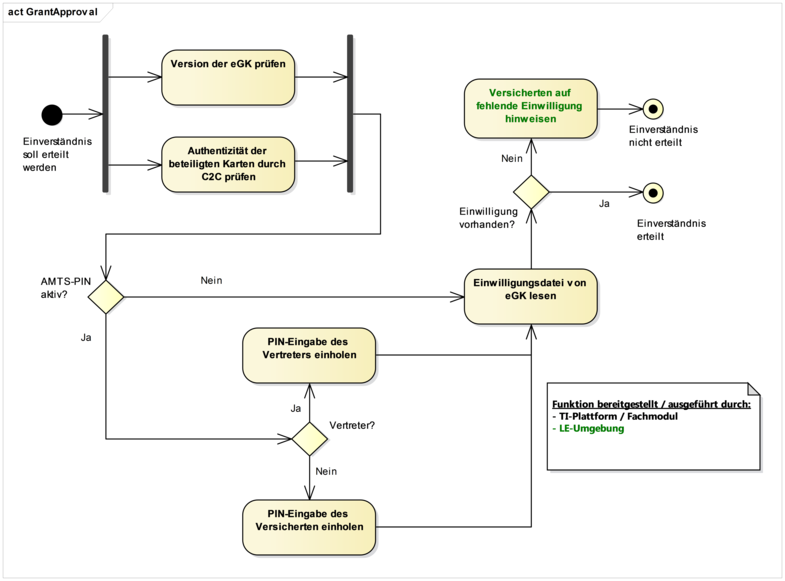
Abbildung 2: Abb_AMTS_FM_002 Ablaufdiagramm der Operation GrantApproval
Der Zugriff auf EF.AMTS erfordert erstens die Freischaltung der eGK mithilfe von PIN und C2C und zweitens das Vorhandensein einer nichtleeren Einwilligung.
AMTS-A_2182
Das Fachmodul AMTS MUSS vor jedem Zugriff auf die eMP/AMTS-Daten in EF.AMTS auf der eGK prüfen, ob eine Einwilligung vorhanden ist.
<=
AMTS-A_2183
Falls das Einverständnis nicht gegeben wurde oder bei der Prüfung ein Fehler auftritt, MUSS das Fachmodul AMTS die aufgerufene Operation mit dem Code 6056 gemäß Tabelle Tab_AMTS_FM_199 abbrechen.
<=Abbildung Abb_AMTS_FM_003 stellt informativ den Ablauf der Operation ReadMP dar.
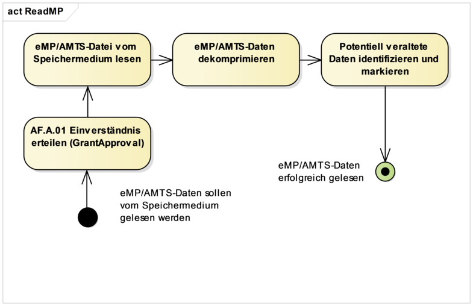
Abbildung 3: Abb_AMTS_FM_003 Ablaufdiagramm der Operation ReadMP
AMTS-A_2185
Die Operation ReadMP MUSS die auf der eGK in EF.AMTS gespeicherten eMP/AMTS-Daten auslesen und an das aufrufende System übergeben.
<=AMTS-A_2187
Sobald EF.AMTS ausgelesen wurde, MUSS die Operation ReadMP die eMP/AMTS-Daten dekomprimieren und anschließend nach Base64 kodieren.
<=
Das exakte Format und die Komprimierungsanforderungen befinden sich in [gemSpec_eGK_Fach_AMTS].
AMTS-A_2188
Falls nicht an anderer Stelle explizit gefordert, DARF die Operation ReadMP die gelesenen eMP/AMTS-Daten NICHT filtern (Einträge entfernen) und NICHT verändern.
<=AMTS-A_2191
Die Operation ReadMP MUSS den Parameter EGKUsage ganzzahlig aufgerundet mit
(belegter Speicher EF.AMTS * 100 )/Gesamtspeicher EF.AMTS
befüllen.
<=AMTS-A_2192
Falls weder die MRPIN.AMTS noch die PIN.AMTS_REP freigeschaltet sind, MUSS die Operation ReadMP das mit dem Parameter UsingPIN vom aufrufenden System festgelegte PIN-Objekt zur Freischaltung von EF.AMTS nutzen.
<=A_17823
Falls sich keine eMP/AMTS-Daten auf der eGK befinden, MUSS die Operation ReadMP mit dem Fehler 6068 gemäß [Tab_AMTS_FM_199] abbrechen. <=
Abbildung Abb_AMTS_FM_004 stellt informativ den Ablauf der Operation WriteMP dar.
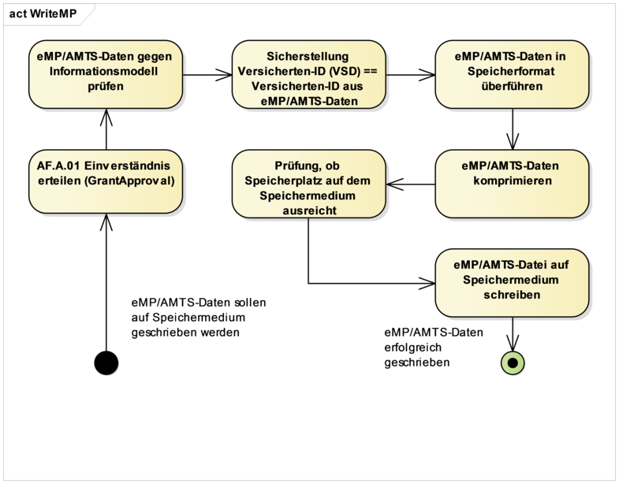
Abbildung 4: Abb_AMTS_FM_004 Ablaufdiagramm der Operation WriteMP
AMTS-A_2193
Die Operation WriteMP MUSS die vom aufrufenden System übergebenen eMP/AMTS-Daten auf der eGK in EF.AMTS abspeichern.
<=AMTS-A_2195
Falls nicht an anderer Stelle explizit gefordert, DARF die Operation WriteMP die zu schreibenden eMP/AMTS-Daten NICHT filtern (Einträge entfernen) und NICHT verändern.
<=AMTS-A_2197
Falls sich die zwischengespeicherte Versicherten-ID und die Versicherten-ID aus den vom Clientsystem übergebenen eMP/AMTS-Daten (X-Path: „AMTS:MP/AMTS:P/@egk“) unterscheiden, MUSS die Operation WriteMP mit dem Code 6057 gemäß Tabelle Tab_AMTS_FM_199 abbrechen.
<=AMTS-A_2198
Falls sich die vom aufrufenden System übergebenen eMP/AMTS-Daten nicht gegen das Schema gemäß [gemSpec_Info_AMTS] validieren lassen, MUSS die Operation WriteMP mit dem Code 6058 gemäß Tabelle Tab_AMTS_FM_199 abbrechen.
<=AMTS-A_2200
Die Operation WriteMP MUSS die eMP/AMTS-Daten von Base64 nach XML dekodieren, anschließend gegen das Schema gemäß [gemSpec_Info_AMTS] validieren und abschließend komprimiert auf der eGK speichern.
<=
Hinweis: Das exakte Format und die Komprimierungsanforderungen befinden sich in [gemSpec_eGK_Fach_AMTS].
AMTS-A_2201
Falls der auf der eGK zur Verfügung stehende Speicherplatz zur Ablage der komprimierten eMP/AMTS-Daten nicht ausreicht, MUSS die Operation WriteMP vor dem Schreibvorgang auf die eGK mit dem Code 6059 gemäß Tabelle Tab_AMTS_FM_199 abbrechen.
<=AMTS-A_2202
Falls weder die MRPIN.AMTS noch die PIN.AMTS_REP freigeschaltet sind, MUSS die Operation WriteMP das mit dem Parameter UsingPIN vom aufrufenden System festgelegte PIN-Objekt zur Freischaltung von EF.AMTS nutzen.
<=Abbildung Abb_AMTS_FM_005 stellt informativ den Ablauf der Operation ReadConsent dar.
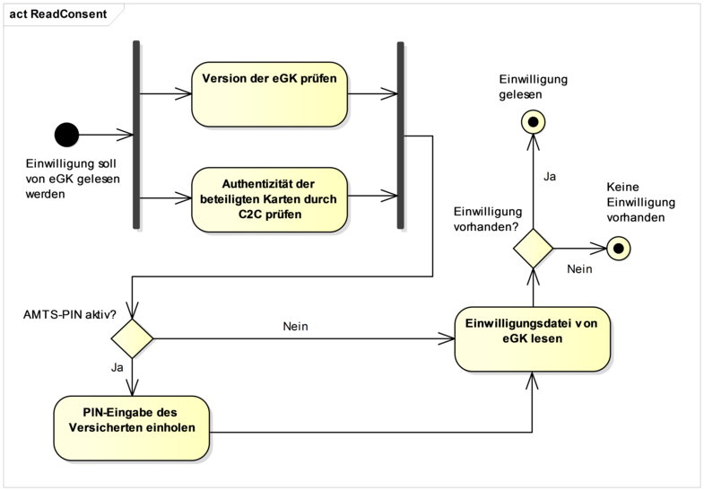
Abbildung 5: Abb_AMTS_FM_005 Ablaufdiagramm der Operation ReadConsent
AMTS-A_2203
Die Operation ReadConsent MUSS die auf der eGK in EF.AMTS gespeicherte Einwilligung auslesen und an das aufrufende System übergeben.
<=Hinweis: Hierbei ist das in [gemSpec_eGK_Fach_AMTS] beschriebene Speicherformatzu berücksichtigen.
Abbildung Abb_AMTS_FM_006 stellt informativ den Ablauf der Operation WriteConsent dar.
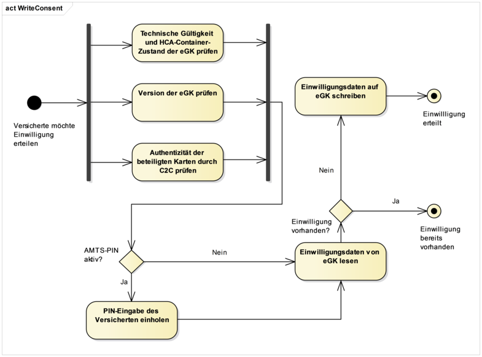
Abbildung 6: Abb_AMTS_FM_006 Ablaufdiagramm der Operation WriteConsent
AMTS-A_2205
Die Operation WriteConsent MUSS die vom aufrufenden System übergebene Einwilligung auf der eGK in der Datei EF.AMTS speichern.
<=Abbildung Abb_AMTS_FM_007 stellt informativ den Ablauf der Operation DeleteConsent dar.
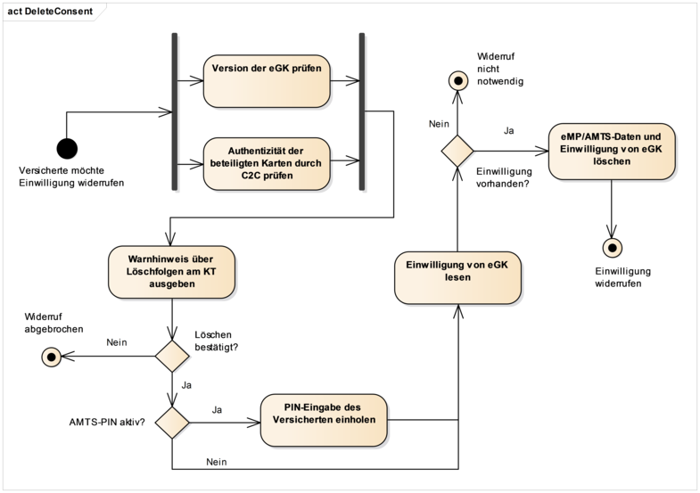
Abbildung 7 : Abb_AMTS_FM_007 Ablaufdiagramm der Operation DeleteConsent
AMTS-A_2206
Die Operation DeleteConsent MUSS die Einwilligung in der Datei EF.AMTS auf der eGK löschen.
<=AMTS-A_2207
Die Operation DeleteConsent MUSS vor der Löschung und vor eventueller PIN-Eingabe, eine Sicherheitsabfrage zum Vorgang und den Konsequenzen am Kartenterminal, wie in Tabelle Tab_AMTS_FM_015 beschrieben, ausgeben.
<=Tabelle 17: Tab_AMTS_FM_015 Sicherheitsabfrage bei DeleteContent
| Anzeige am Kartenterminal (Sicherheitsabfrage bei Löschung der Einwilligung) |
|---|
| „Einwilligung und Medikationsdaten löschen?“ |
AMTS-A_2208
Nach der Ausgabe des Warnhinweises zur Löschung der Einwilligung, MUSS die Operation DeleteConsent dem Versicherten die Möglichkeit geben, den Vorgang am Kartenterminal abzubrechen oder fortzusetzen.
<=AMTS-A_2209
Falls der Löschvorgang vom Versicherten über das Kartenterminal nicht bestätigt wird, MUSS das Fachmodul die Operation DeleteConsent mit dem Code 6065 gemäß Tab_AMTS_FM_199 abbrechen.
<=| Kürzel |
Erläuterung |
|---|---|
| AFO |
Anforderung |
| AMTS |
Arzneimitteltherapiesicherheit |
| AVS |
Apothekenverwaltungssysteme |
| BMP |
bundeseinheitlicher Medikationsplan |
| C2C |
Card-to-Card |
| CVC |
Card Verifiable Certificate |
| DF |
Dedicated File |
| EF |
Elementary File |
| eGK |
elektronische Gesundheitskarte |
| eMP |
elektronischer Medikationsplan |
| FM |
Fachmodul |
| G2 |
eGK der 2. Generation |
| HBA |
Heilberufsausweis |
| HCA |
HealthCareApplication |
| HTTP |
Hypertext Transfer Protocols |
| KIS |
Krankenhausinformationssysteme |
| KSR |
Konfigurations- und Software-Repository |
| KT |
Kartenterminal |
| KTR |
Kostenträger |
| KVNR |
Krankenversichertennummer |
| LE |
Leistungserbringer |
| mobEG |
mobiles Einsatzgerät |
| ORS |
Online Rollout Stufe |
| PIN |
Persönliche Identifikationsnummer |
| PKI |
Public Key Infrastructure |
| PVS |
Praxisverwaltungssysteme |
| RFC |
Request for Comments |
| SBV-TIP |
Servicebetriebsverantwortlicher der TI-Plattform |
| SMC-B |
SecureModuleCard Typ B |
| SOAP |
Simple Object Access Protocol |
| SysL |
Systemlösung |
| TI |
Telematikinfrastruktur |
| TIP |
Telematikinfrastruktur-Plattform |
| TUC |
Technical Use Case |
| UCS |
Universal Character Set |
| UTF |
UCS Transformation Format |
| VSDM |
Versichertenstammdatenmanagement |
| WS |
Web Service |
| WSDL |
Web Services Description Language |
| XML |
Extensible Markup Language |
| Begriff |
Erläuterung |
|---|---|
| „alte eGK“/Quellkarte |
Als „alte eGK“ wird jene eGK verstanden, die bei dem Anwendungsfall Kartentausch als erstes gesteckt wird oder beim Aufruf der Operation bereits gesteckt ist. |
| „neue eGK“/Zielkarte |
Als „neue eGK“ wird jene eGK verstanden, die bei dem Anwendungsfall Kartentausch als zweites gesteckt wird. Auf sie werden die Daten übertragen. |
| Einverständnis/Einwilligung |
Das fallbezogene Einverständnis erfordert die grundsätzliche Einwilligung in die Fachanwendung und besteht aus der Kartenübergabe sowie der PIN-Eingabe zur Freischaltung. Die Einwilligung hingegen wird gegenüber einem LE erklärt. Die eGK enthält in der Einwilligung Name und Adresse des LE als Referenz. Das Vorhandensein dieser Referenz wird innerhalb der TI als Einwilligung interpretiert. |
| eMP/AMTS-Datensatz |
eMP/AMTS-Daten + Einwilligung (EF.AMTS) |
| Funktionsmerkmal |
Der Begriff beschreibt eine Funktion oder auch einzelne, eine logische Einheit bildende Teilfunktionen der TI im Rahmen der funktionalen Zerlegung des Systems. |
| KVNR |
eGK-Krankenversichertennummer |
| Operation(en) |
Operationen sind abgegrenzte Funktionseinheiten des Fachmoduls, die von außen über eine Schnittstelle aufrufbar sind. Der Begriff bezieht sich in diesem Dokument immer auf die Operationen von AMTS_Service. |
| Schnittstelle |
Schnittstellen beschreiben das Außenverhalten wie z.B. Aufruf- und Rückgabeparameter von Operationen. |
| Versicherten-ID |
10-stellige unveränderliche Teil der eGK-Krankenversichertennummer (KVNR) |
| Vertreter |
Eine natürliche Person, die der Versicherte statt seiner selbst zur Ausübung bestimmter Anwendungsfälle autorisieren kann. |
| Vertreter-PIN |
PIN, die der Versicherte an den Vertreter weitergeben kann, damit der Vertreter die zulässigen Operationen für den Versicherten zur Anwendung eMP/AMTS durchführen kann. |
Die nachfolgende Tabelle enthält die Bezeichnung der in dem vorliegenden Dokument referenzierten Dokumente der gematik zur Telematikinfrastruktur. Der mit der vorliegenden Version korrelierende Entwicklungsstand dieser Konzepte und Spezifikationen wird pro Release in einer Dokumentenlandkarte definiert; Version und Stand der referenzierten Dokumente sind daher in der nachfolgenden Tabelle nicht aufgeführt. Deren zu diesem Dokument jeweils gültige Versionsnummern sind in der aktuellen, von der gematik veröffentlichten Dokumentenlandkarte enthalten, in der die vorliegende Version aufgeführt wird.
| [Quelle] |
Herausgeber: Titel |
|---|---|
| [gemGlossar] |
gematik: Einführung der Gesundheitskarte -Glossar |
| [gemKPT_Arch_TIP] |
gematik: Konzept Architektur der TI-Plattform |
| [gemSpec_Kon] |
gematik: Spezifikation Konnektor |
| [gemSpec_OM] |
gematik: Übergreifende Spezifikation Operations und Maintenance |
| [gemSpec_Perf] |
gematik: Performance und Mengengerüst TI-Plattform |
| [ServiceInformation.xsd] |
gematik: XML-Schema-Dokument für Service-Informationen der Konnektordienste |
| [AMTSService.xsd] |
gematik: XML-Schema-Dokument für die Nachrichtenstrukturen und Datentypen des Dienstes AMTS_Service |
| [gemSpec_Info_AMTS] |
gematik: Informationsmodell eMP/AMTS-Datenmanagement |
| [gemSpec_eGK_Fach_AMTS] |
gematik: Speicherstrukturen der eGK für die Fachanwendung AMTS |
| [gemSysL_AMTS_A] |
gematik: Systemspezifisches Konzept eMP/AMTS-Datenmanagement (Stufe A) |
| [gemSpec_Karten_Fach_TIP] |
gematik: Befüllvorschriften für die Plattformanteile der Karten der TI |
| [Quelle] |
Herausgeber (Erscheinungsdatum): Titel |
|---|---|
| [BasicProfile1.2] |
WS-I (09.11.2010): Basic Profile Version 1.2 http://ws-i.org/profiles/BasicProfile-1.2-2010-11-09.html (zuletzt geprüft am 12.10.2016) |
| [RFC2119] |
IETF (März 1997): RFC 2119: Key words for use in RFCs to Indicate Requirement Levels https://www.ietf.org/rfc/rfc2119.txt (zuletzt geprüft am 12.10.2016) |
| [SOAP1.1] |
W3C (08.05.2000): Simple Object Access Protocol (SOAP) 1.1 https://www.w3.org/TR/2000/NOTE-SOAP-20000508/ (zuletzt geprüft am 12.10.2016) |
| [WSDL1.1] |
W3C (15.03.2001): Web Services Description Language (WSDL) 1.1 https://www.w3.org/TR/wsdl (zuletzt geprüft am 12.10.2016) |
Die nachfolgende Tabelle Tab_AMTS_FM_199 enthält die spezifischen Fehlercodes und -beschreibungen gemäß [gemSpec_OM] der Fachanwendung eMP/AMTS-Datenmanagement.
Tabelle 18: Tab_AMTS_FM_199 Fehlermeldungen des Fachmoduls AMTS
| Code |
ErrorType |
Severity |
Errortext |
Befüllung Details |
|---|---|---|---|---|
| 6000 |
Technical |
FATAL |
Interner Fehler - Die Operation konnte nicht durchgeführt werden. |
Der Detailtext KANN den Fehler näher beschreiben. |
| 6010 |
Technical |
FATAL |
Einwilligung bereits vorhanden |
Der Detailtext KANN den Fehler näher beschreiben. |
| 6049 |
Security |
ERROR |
Smartcard nicht freigeschaltet |
Der Detailtext MUSS den Fehler näher beschreiben und mindestens den Typ der nicht freigeschalteten Smartcard angeben. |
| 6051 |
Technical |
ERROR |
eGK-Generation 1 und 1+ nicht unterstützt |
Der Detailtext KANN den Fehler näher beschreiben. |
| 6052 |
Security |
ERROR |
Verbindungsfehler zwischen Karten |
Der Detailtext KANN den Fehler näher beschreiben. |
| 6054 |
Technical |
ERROR |
eMP/AMTS-Daten sind inkonsistent. Bitte Daten erneut schreiben. |
Der Detailtext KANN den Fehler näher beschreiben. |
| 6056 |
Technical |
ERROR |
Einverständnis nicht erteilt |
Der Detailtext KANN den Fehler näher beschreiben. |
| 6057 |
Business |
ERROR |
Versicherten-ID von eGK und zu speichernden Daten unterscheiden sich |
Der Detailtext KANN den Fehler näher beschreiben. |
| 6058 |
Technical |
ERROR |
eMP/AMTS-Daten konnten nicht validiert werden |
Der Detailtext KANN den Fehler näher beschreiben. |
| 6059 |
Business |
ERROR |
Nicht genügend Speicherplatz auf der eGK |
Der Detailtext KANN den Fehler näher beschreiben. |
| 6060 |
Technical |
ERROR |
Einwilligung konnte nicht validiert werden |
Der Detailtext KANN den Fehler näher beschreiben. |
| 6061 |
Business |
ERROR |
Keine Einwilligung vorhanden |
Der Detailtext KANN den Fehler näher beschreiben. |
| 6063 |
Security |
ERROR |
eGK gesperrt |
Der Detailtext KANN den Fehler näher beschreiben. |
| 6064 |
Business |
ERROR |
Fachanwendung verborgen |
Der Detailtext KANN den Fehler näher beschreiben. |
| 6065 |
Business |
ERROR |
Löschung der eMP/AMTS-Daten nicht zugestimmt |
Der Detailtext KANN den Fehler näher beschreiben. |
| 6068 |
Business |
ERROR |
Es sind keine eMP/AMTS-Daten auf der eGK gespeichert |
Der Detailtext KANN den Fehler näher beschreiben. |
| 6072 |
Technical |
ERROR |
Operation durch Ziehen der eGK vorzeitig beendet |
Der Detailtext KANN den Fehler näher beschreiben. |